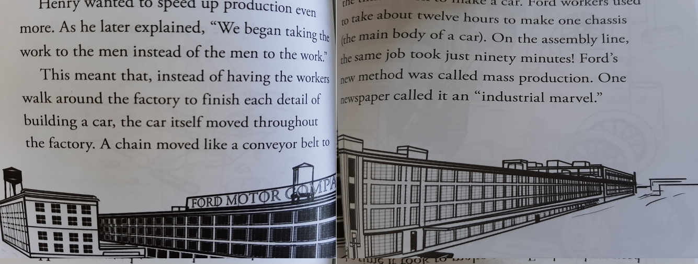

Who was Henry Ford?
I mainly talking about biography of Henry Ford which is written in this book. This book was very good, I enjoyed reading. There are total eight chapters included along with one introductive chapter, timeline of Henry Ford's life side by timeline of the world and bibliography.
The best thing about this book is I neven get bored while reading the books because the story was an obious interesting but they also mentioned the sketch with respect to story written on mostly each page. It becomes very easy to imagine story with respect to the sketches. The story was also short and very clean and easy to read and stepwise towards Ford's Motor Company.
There are many stories which are better but, The best snippet which made me crazy in this book is:

I learned few things from this sentence, I know it was the part of the publicity Ford was trying to do. Henry Ford created a car named "Model T" it was much better car cost of $850 in 1908. His ads promised the drivers,
"No man making a good salary will be unable to own one".
The moral I got from this book is, identify things you like to do and put your 100% in those you will become expert in that. Sometimes you get diffculties while travelling but stay strong better roads waiting for you.
Thank You!